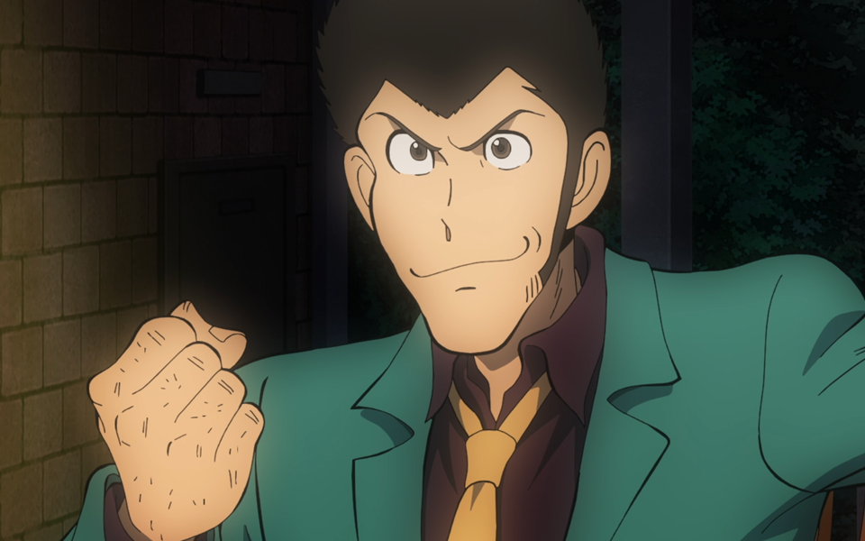

动画简介
《鲁邦三世》是日本漫画家Monkey Punch（モンキー．パンチ，本名加藤一彦）的漫画系列作品，1967年8月10日在双叶社《周刊漫画Action》创刊号上开始连载，1971年TV动画初登荧屏，已超过50年并仍在放送中，一直保持极高的人气。该作品已被陆续改编为电视动画、剧场版、OVA、游戏等。
主要人物
鲁邦三世
爱车：梅赛德斯奔驰 SSK和菲亚特500（原先为二代，最新连载改为三代）
常用武器：沃尔特P-38手枪
简介：鲁邦射击、变装、武器、飞刀的操纵…等能力全是一流的，而且鲁邦是个IQ高达300的天才，经由他策划的行动几乎是没有不成功的，所以基本上只要是他所想要的东西都可以到手，正是所谓高手中的高手。乍看之下鲁邦好像是个完美无缺的能人，不过贪求美色却是他最致命的死穴，这一点就和一般的臭男人没什么两样。小偷人人喊打，不过鲁邦三世却是其中的异类，很难引起人家的反感。他虽然是个小偷，却充满了正义感，这也正是警探钱形幸一之所以苦苦追着鲁邦跑的原因之一。和他一起的女人除了峰不二子，其他大多喜欢他，但他似乎只喜欢峰不二子。他最怕的食物是章鱼，会过敏的。
次元大介

嗜好：香烟和酒
喜欢的香烟牌子：ポールモール（PALL MALL，即长红）マールボ（Marlboro，即万宝路）
喜欢的食物：烟熏猪肉、豆、披萨、汉堡、鲁邦做的放了很多肉和啤酒的好味烧
帽子规格：周长58.25cm 肩长8.6cm 厚1.5mm
武器：史密斯.韦森M19左轮手枪
简介：次元并不多话，外表给人的感觉就像个职业杀手（其实以前就是杀手），总是用帽子遮住大半的脸孔，其实是个挺害羞的大男人。鲁邦有危险时，都是次元出手相救，超级讲义气。次元和鲁邦比起来，次元称得上是个十全十美的男人，枪法百发百中，几乎未曾失手，绝对不会因为女色而误事。如果硬要说他有什么缺点的话，那就是只要他没戴上那顶正字商标的帽子的话，就无法用枪射中目标。
石川五右卫门

口头禅：又砍了一些无聊的东西
武器：斩铁剑
资格：示刀流空手免许皆伝（即示刀流空手道最高级别）
师父：百地三太夫/示刀流总帅/自然先生/不空导师/治田小太郎
介绍：是那传说在安土桃山时代，被放进大锅煮死的小偷，石川五右卫门的第十三代。一开始他是鲁邦的敌人，之后却成了鲁邦的同伴。隶属示刀流派，所用的爱刀为斩铁剑，这把剑能切开任何东西，不过有一样东西却是它怎么切也断不了的…那就是蒟蒻（就是魔芋，软软的黏糊糊）还有梦的碎片！？真是太令人匪夷所思了...五右卫门后来甚至利用虎彻、好兼、正宗的三大名刀，重新铸造了一把新剑。据说一开始是鲁邦一世偷了示刀流秘传书，之后五右卫门的师父又从鲁邦二世手上偷了回去，然后鲁邦三世又跑去偷了回来，这样纠缠到最后五右卫门就成了鲁邦的同伴。五右卫门是个真正的男子汉，很讨厌女人却相当专情。和不二子曾有过一段情，不过后来因为不二子的背叛伤了他纯纯的心，之后就对她不理也不睬了，将斩铁剑看得比命还重要。
峰不二子

爱好：日光浴、跳舞、旅游、购物、游泳或其他水上运动
爱枪：勃朗宁M1910
喜欢的事物：香槟、红酒、米酒和啤酒，抽烟（More牌）
简介：搞不清楚她到底是间谍、小偷或者是杀手，是个谜样一般的女人。大部分时间她算是鲁邦的同伙，不过随时都会背叛鲁邦。不二子最常做的就是提供情报给鲁邦、煽动鲁邦去偷东西，然后又设陷阱，将东西独吞、占为己有。虽然次元和五右卫门都很讨厌她，不过鲁邦却为她着迷得不得了。只知道不二子的血型为A型，有个哥哥，其余一概不知。据说不二子的哥哥是被鲁邦错杀而亡的，不过就不知道不二子知不知道这件事了……总之不二子最爱的就是钱，为了钱她什么都做。虽然不二子的恶名应该已经传遍全世界，不过还是有很多的富商名流受她的魅力所诱。不二子最讨厌的是青蛙，也有密闭恐惧症。
钱形幸一

资格：柔道五段
特技 :生擒之术、投掷手铐、射击
服饰：土黄色BURBERRY牌军大衣，同牌软毡帽（TV第三版中为浅绿色大衣，蓝黑色软毡帽）
职务：东京警视厅警部，国际刑警组织鲁邦专任搜查官
简介：死追着鲁邦不放的人，钱形平次的第七代，碍于工作非得逮捕鲁邦不成，同时也将鲁邦视为对手，一心只想赢过鲁邦。据说他抱持单身主义，不过却总是拒绝不了女人。钱形是员警署中一等一的高手，却怎么样也抓不到鲁邦，其实怪就要怪鲁邦太高竿了。虽然抓不到鲁邦，不过能一直掌握到鲁邦的行踪，追着他跑的人唯有钱形一人而已。 事实上，大叔的实力不容小觑。
剧情简介
“鲁邦三世”有不死传说之喻，漫画作者加藤一彦(Monkey Punch)曾表示，鲁邦三世的冒险精神是他一生追求的，身为漫画家的他，主要的休闲活动就是创作，所有的梦想、幻想都在“鲁邦三世”实现。猴子拳将鲁邦三世塑造成一个让人无法讨厌的怪盗，让读者羡慕鲁邦三世逍遥的生活。鲁邦一行周游于世界各地，不时重操盗窃的老本行。
自从一九六七年，日本双叶社漫画周刊ACTION创刊就开始连载漫画，四年后改编成动画，在日本一炮而红。当年参与“鲁邦三世”动画制作的人，如今都是赫赫有名重量级的大师，有当时隶属于「APRODUCTION演出GROUP」的高畑勋与宫崎骏两位：《网球女杰》、《怪医黑杰克》的出崎统：《心之谷》的近藤喜文…等等；其中最为功不可没的，便是当时的作画监督大冢康生了。尽管他真正有参与制作的「鲁邦」动画作品只有一部TV版及一部剧场版，然而他却赋予了这些角色真正的灵魂，自此几乎所有「鲁邦」的动画作品都沿用大冢先生的鲁邦设定。
1995年3月19日6点35分，在制作《去死吧！诺查丹玛斯的地狱！》期间，鲁邦的第一任声优山田康雄先生因颅内出血在大田区的都立荏原医院不幸逝世，享年62岁。大家还因为害怕从此之后再也看不到、听不到鲁邦的新作而难过了好一阵子，还好后来出现了一位模仿高手（现任声优栗田贯一），丝毫不差地重现了鲁邦的声音，鲁邦迷才再度振作了起来，也因此成就了一段佳话。